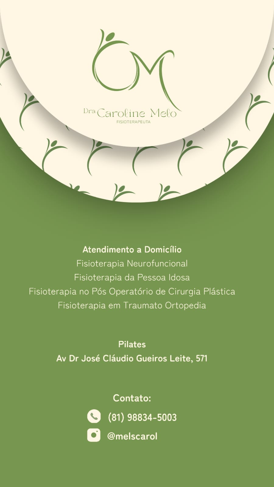
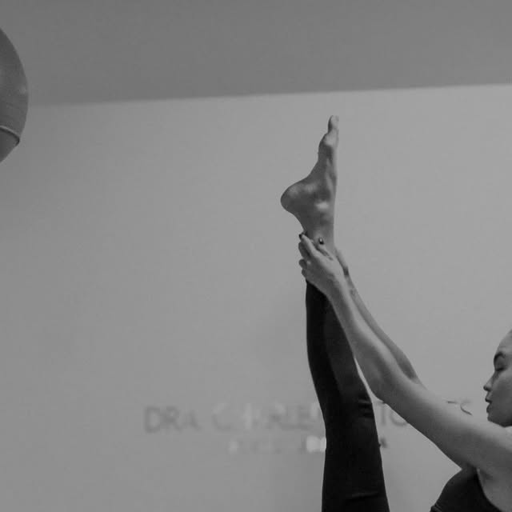
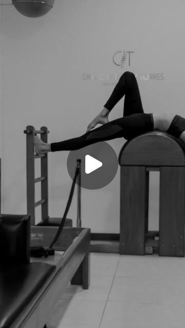

Fisioterapia especializada e Pilates para uma vida sem limitações.
Atendimentos no consultório no Janga (Paulista - PE) e com a comodidade do Atendimento a Domicílio. Reabilitação neurofuncional, pós-operatório de cirurgia plástica, gerontologia funcional e ortopedia.

Atendimento a Domicílio
Paulista, Olinda e região
Estúdio no Janga
Av. Dr. José Cláudio G. Leite, 571
Dra. Caroline Melo
Especialista em Fisioterapia Neurofuncional
Reabilitação pautada na ciência e no bem-estar humano integral.
Sou a Dra. Caroline Melo (CREFITO 315194-F), fisioterapeuta especialista em Fisioterapia Neurofuncional, com sólida experiência em reabilitação motora, atendimento domiciliar, pós-operatório em cirurgia plástica e Pilates Clínico.
Minha conduta clínica é estruturada com base na Classificação Internacional de Funcionalidade, Incapacidade e Saúde (CIF da OMS), garantindo que cada tratamento considere não apenas o sintoma, mas a funcionalidade, o bem-estar emocional e a qualidade de vida global de quem atendo.
Formação & Credenciais Acadêmicas
Pós-Graduação em Neurofuncional
Instituto Paiva • 2022
Formação Completa em Pilates
Método Clássico e Contemporâneo • 2020
Bacharelado em Fisioterapia
UNIBRA • 2019
Abordagem Baseada na CIF
Escuta ativa e metas funcionais mensuráveis
Áreas de Atuação da Dra. Caroline Melo
Conheça as modalidades clínicas disponíveis no consultório, estúdio e em domicílio.

Atendimento a Domicílio
Fisioterapia completa no conforto e na segurança do seu lar. Ideal para pacientes em pós-operatório recente, idosos ou quem possui rotina intensa em Paulista e adjacências.

Fisioterapia Neurofuncional
Tratamento e reabilitação de sequelas motoras e neuromusculares (AVC, Doença de Parkinson, neuropatias e traumatismos). Estimulação da neuroplasticidade e do equilíbrio.

Fisioterapia da Pessoa Idosa
Gerontologia voltada para a longevidade ativa, prevenção de quedas, manutenção da densidade óssea, ganho de força muscular e preservação da independência motora.

Pós-Operatório de Cirurgia Plástica
Acompanhamento especializado para lipoaspiração, abdominoplastia e mamoplastia. Drenagem linfática manual, manejo e prevenção de fibroses, seromas e taping terapêutico.

Fisioterapia em Traumato Ortopedia
Reabilitação de lesões articulares, fraturas, tendinites, bursites e dores crônicas na coluna (hérnia de disco e ciatalgia). Alívio da dor e restauração da mobilidade.

Pilates no Estúdio
Aulas ministradas em aparelhos clássicos (Reformer, Cadillac, Barrel) com foco em postura, fortalecimento do core, ganho de flexibilidade e consciência corporal.
Descubra a conduta recomendada para o seu caso
Selecione abaixo sua principal necessidade para ver a abordagem da Dra. Caroline Melo e gerar sua mensagem direta para o WhatsApp.
Acompanhe a rotina clínica no Instagram
Dicas diárias sobre postura, reabilitação motora, exercícios de Pilates e bastidores dos atendimentos no estúdio e a domicílio.
Seu corpo é seu maior bem: fortalecimento, controle e alinhamento no Reformer.

Novos desafios e evolução constante para o seu corpo através do método Pilates.
"Cresce a coluna, fecha a escápula": o corpo alcança o que a mente acredita.

A arte do controle corporal, flexibilidade e extensão da coluna no Barrel.
Onde encontrar a Dra. Caroline Melo
No estúdio no Janga ou com agendamento direto na sua casa em Paulista, Olinda e região.
Dra. Caroline Melo
Fisioterapia • CREFITO 315194-F
Endereço do Pilates
Av. Dr. José Cláudio Gueiros Leite, 571
Janga • Paulista - PE
Atendimento a Domicílio
Paulista, Olinda e região metropolitana (agendamento prévio)
E-mail Profissional
Pronta para cuidar da sua saúde com a atenção que você merece?
Fale agora com a Dra. Caroline Melo e agende seu atendimento em domicílio ou no estúdio de Pilates em Paulista - PE.